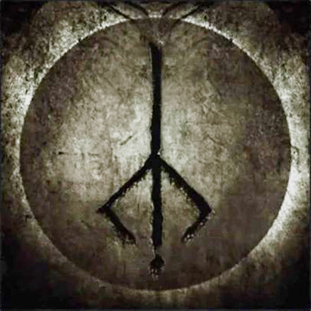
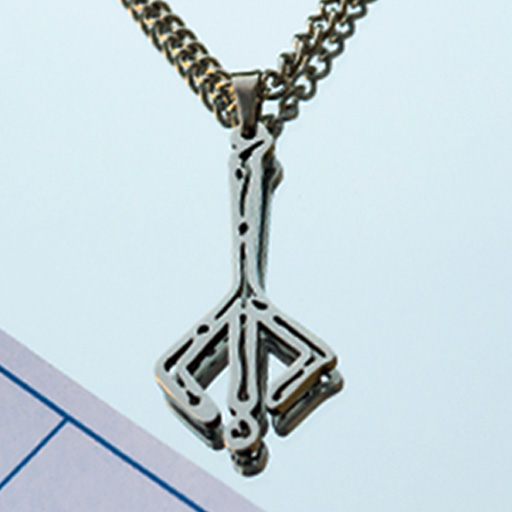

Описание
Охотничья метка — это выгравированный символ воли охотника, способного отречься от этой жизни и пробудиться у ближайшего фонаря. Она не является физическим предметом в традиционном смысле, но существует как проявление внутреннего намерения.
Как получить
- Предоставляется автоматически в начале игры.
- Можно найти в мире игры в виде альтернативной версии (Bold Hunter's Mark).
Эффект
Позволяет игроку телепортироваться к последнему активированному фонарю. При этом не теряются набранные Blood Echoes, в отличие от смерти. Это делает метку стратегическим инструментом в сложных зонах.
Связь с лором
Hunter's Mark тесно связана с темой осознания, памяти и забвения. Использование метки может символизировать отказ от текущего "сна", добровольное возвращение в исходную точку. Это также отсылает к цикличности охоты и личной жертве охотника.
Галерея


Интересные факты
- В японской версии предмет называется 「狩人の証」(証 — "знак, доказательство").
- Метка изображена на внутренней стороне амулетов в ограниченных изданиях.
- Использование метки иногда может спасти игрока от смерти в безвыходных ситуациях.